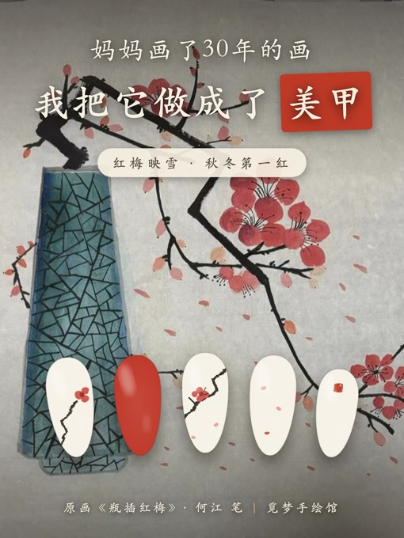
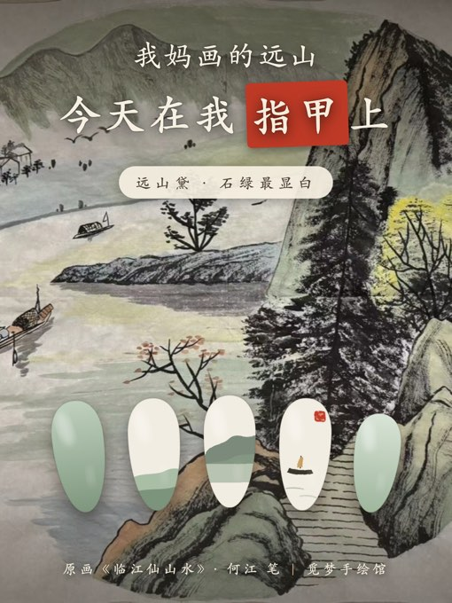
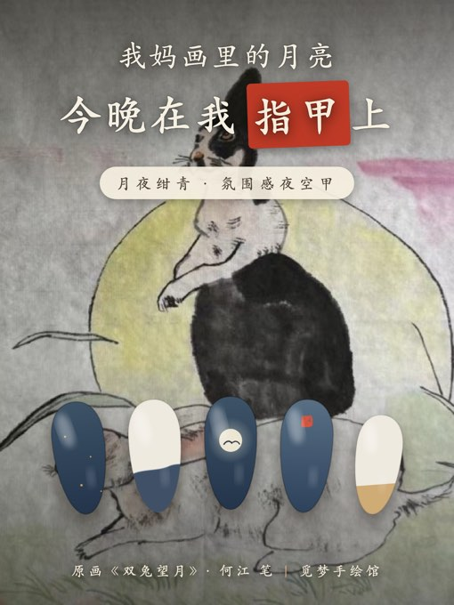

把妈妈画了三十年的画,戴在指尖。五套概念,每套取一幅《临江仙画集》原作:底色从画里取样,主画指只画一个母题——山、月、梅、牡丹、印。页尾有原画同框:每套甲片回到它出生的那幅画上——一横幅,一指尖。
石绿是今年最显白的绿。中指一座雾里远山,无名指一叶小舟,拇指整片山色——像把江南阴天戴在手上。
粉紫两色牡丹是画集里最艳的一幅。花瓣用晕染腮红法,黄蕊用金箔点——富贵但不俗,春节和婚宴的王牌。
画里那根方折的墨枝是灵魂——美甲上也要折出棱角,梅花才有骨。奶白当雪,一指纯朱砂压阵,秋冬第一红。
画里那轮黄月亮,搬到无名指上发光。绀青渐变+一粒奶白圆月+金箔碎星,晚上聚会灯一打,整只手是夜空。
给不敢戴颜色的人:全手裸杏,只在无名指盖一枚印。通勤零压力,伸手全是故事——"这是我妈落款用的印"。转发率最高的往往是最素的。
每一套都回到它出生的那幅画上:甲片摆在原作上拍板定色。左手是她的三十年,右手是这个秋天。


